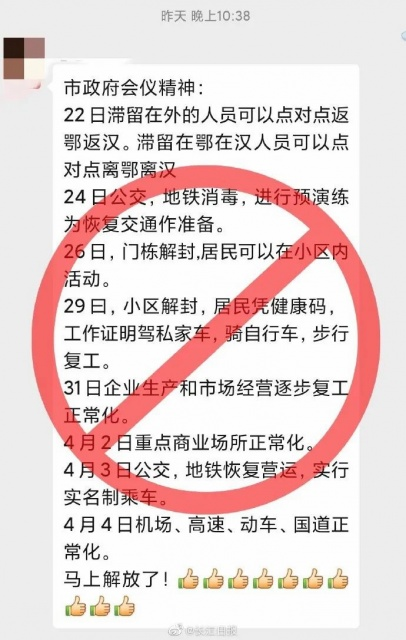
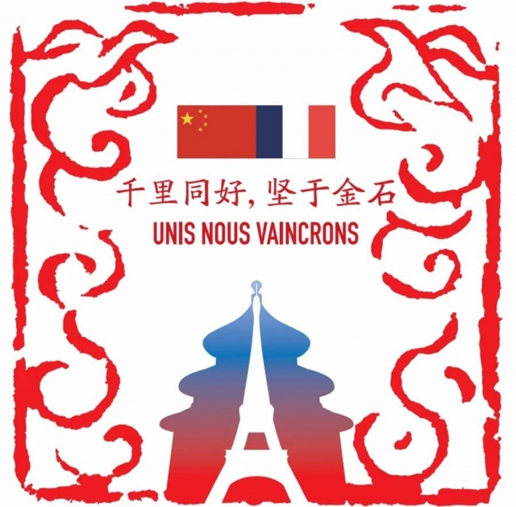

湖北上市公司的复工焦虑：有的停不得，有的赔不起
原文链接 备份链接 2019年上半年占据湖北省GDP约五分之一的112家省内上市公司，目前复工情况各异。部分公司影响不大，但也有企业收入面临较大下滑风险 文丨《财经》记者 张建锋 王颖 张欣培 刘以秦 编辑丨陆玲 3月16日，《财经》记 …
叶青武汉日记：湖北规上工业复工率49.3%
 5483
5483
来源：正和岛
作者：叶青
03-19正在打榜，当前第1

[
中国企业家杂志

- -
](https://archive.ph/o/z0zvx/mp.zhisland.com/wmp/user/personal/other/home?uid=6564051516242526216)
推荐人

1、中国以外新冠肺炎确诊病例总数达112878
18日，周三，晴。18日，全国大陆新增确诊病例34例，新增死亡病例8例（湖北8例），新增疑似病例23例。截至18日，全国大陆现有确诊病例7263例（其中重症病例2314例），累计治愈出院病例70420例，累计死亡病例3245例，累计报告确诊病例80928例，现有疑似病例105例。湖北新增确诊病例0例（武汉0例），新增治愈出院病例795例（武汉733例），新增死亡病例8例（武汉6例），现有确诊病例6992例（武汉6744例），其中重症病例2274例（武汉2222例）。累计治愈出院病例57678例（武汉40765例），累计死亡病例3130例（武汉2496例），累计确诊病例67800例（武汉50005例）。新增疑似病例0例（武汉0例），现有疑似病例0例（武汉0例）。武汉三个0，金光闪闪。18日，新增报告境外输入确诊病例34例（北京21例，广东9例，上海2例，黑龙江1例，浙江1例）。截至18日，累计报告境外输入确诊病例189例。北京境外输入，数字剧增，让人担忧。截至欧洲中部时间18日10时（北京时间18日17时），新冠肺炎全球确诊病例达到194029例，全球死亡病例达到7873例。疫情已影响到164个国家和地区。
2、21日武汉复工应该不会改了
18日，中共中央政治局常务委员会召开会议。针对湖北有两个重点，也是我们期待已久的：武汉市要逐步推进复工复产，湖北省其他地区要稳妥有序解除管控措施。湖北省要同有关省份主动对接，做好“点对点、一站式”输送返岗、外地滞留在鄂人员返乡等工作，人员流入地要落实属地责任。武汉经济要大复苏。复工、复业，至关重要：复工——就业——工资——消费……这是一种客观的逻辑关系。18日下午，湖北省新型冠状病毒肺炎疫情防控工作指挥部举行新闻发布会，透露的数据也让人高兴：截至17日，全省已有7629家规模以上工业企业复工复产，复工率达49.3%。将复工复产企业划分为四类有序推进。武汉市第一类企业可以继续复工复产，其他企业按照不早于3月20日24时前复工复产。这一次应该不会在改了吧！该怕了。对企业家来说，有好消息：省发改委已组建14个企业复工服务督导队，下沉各市州现场督导协调，开展补短板、稳投资、支持复工复产专项行动，设立2000亿元专项资金缓解企业融资压力。省经信厅加大力度扶持汽车、磷肥、电子、光纤通信等重点企业复工复产，全省复工、复产、复学所需的口罩、消毒液、测温枪等有保障。省商务厅根据一个行业一个政策原则，有针对性地解决外贸企业存在的问题，积极扩大新外贸领域。湖北的医护产品要大胆地走出去。全国25个省市区的投资总额已经突破50万亿，湖北三万多亿，钱除了政策性银行、中央财政转移支付之外，就是发行地方债。湖北省2020年第三批185.7亿元政府债券发行公告对外发布，将于19日公开发行，欢迎认购！买湖北债券就是支持湖北。除了复工复业之外，没有稳定工作的人也需要有保障。18日，武汉市出台系列促进贫困劳动力就业举措，开辟贫困劳动力线上求职绿色通道，举办就业扶贫网上专场招聘活动。对暂时无法就业的低保家庭、低收入家庭中灵活务工人员，按全市现行的城市、农村低保标准（城市780元/月、农村635元/月）的4倍，给予一次性临时救助。已签订了劳动合同的相关就业人员，疫情期间工资由企业按规定发放。疫情期间，组织开展网上“春风行动”，开辟线上求职绿色通道。疫情结束后，组织开展面向贫困劳动力的现场招聘活动。对外出务工的贫困劳动力，按跨省务工500元/人、省内区外务工300元/人的标准给予转移就业交通补助。因防控需要新增的保洁环卫、防疫消杀、巡查值守等临时公益岗位，优先安置本村因疫情暂时无法外出的贫困劳动力。疫情结束后，新增的绿化、护林、护路等非全日制扶贫公益岗位，优先安置本村有半（弱）劳动力的贫困人口就业。全市激励社会企业积极参与促进贫困劳动力就业。企业吸纳贫困劳动力就业，签订1年以上劳动合同并按规定缴纳社会保险费1个月及以上的，给予1000元/人的一次性吸纳就业补贴。实现就业1年以上的，给予2000元/人的吸纳就业奖补。在复工复产后吸纳贫困劳动力就业达到务工人数10%以上的新型农业经营主体，优先推荐评比省级、市级相应扶贫荣誉或称号，并给予相关扶持政策。这都是湖北30条中的具体内容。企业家会感兴趣的。复工伴随着复诊。截止18日12时，中部战区总医院汉口院区等40家在汉医院全部恢复普通门诊，仅收治非新冠病人，其中35家开设了急诊。这40家医院已开放床位15767张，统计期内门诊共接诊非新冠患者16831人次，已收治入院非新冠患者8858人。武汉市开设了3家同时接诊新冠和非新冠病人的医院，包括武汉儿童医院、中部战区总医院、湖北省荣军医院。去看病可以，一定要注意安全。非新冠患者就医前请提前留意医院公告、微信公众号、医院官网信息，提前预约，避免等待时间过长或无效就医。18日发布的关于无疫情小区、村（队）调整管控措施的意见，让我们知道了怎么下楼散步。被认定为无疫情小区的，允许居民分批、分时段、分 楼栋，在小区内进行非聚集性的个人活动。被认定为无疫情小区且连续 7 天以上的，允许居民在小区内进行非聚集性的个人自由活动。可恢复小区内为居民提供生活必需品的便利店、药店、小菜场等正常营业。大家都希望早日恢复“自由”。因此，这方面的谣言也会不时地冒出来。近日，一则关于小区解封和商业交通功能恢复的时间表在网上传播，并称是“市政府会议精神”，经核实了解，该消息不属实，请以权威信息为准。

3、漂泊两个多月的肖红兵终于回家
多吸纳湖北人员就业就是帮助湖北。18日9时52分，今春首趟湖北就业专列出发，547名恩施籍务工人员返岗绍兴。这是50多天以来，第一列在湖北站点停靠的火车。医疗队不算。总算是开行了。18日上午十点，肖红兵终于回到了离开了两个多月的家乡——天门市。跑货运生意的肖红兵今年50岁，他1月7日从湖北老家外出跑长途运输，一路经过福建、广东、贵州等地。从四川达州送完货后返程时，受到新冠肺炎疫情影响，全国多处高速入口实行交通管制，肖红兵的回乡计划被打乱。他被迫在高速路上漫无目的地行驶。直到1月29日下午，陕西汉中市的高速民警在应急车道发现了这辆货车和驾驶室中睡觉的他。在民警的帮助下，他在汉中北服务区待了48天。免费住了员工宿舍。14日，天门市新型冠状病毒感染的肺炎疫情防控指挥部发布《天门市关于人员安全有序流动的通告》，规定省外到天门的人员，出行人需向目的地村（社区）或单位提出申请并同意后，持湖北“健康码” 绿码或外省“健康码” 绿码，在各交通卡口登记、扫码、验证、测温后通行。汉中市疫情防控指挥部委托他返乡时为天门市疫情防控指挥部运回一批援助物品，包括100桶次氯酸钠消毒用品、80桶84消毒液、190箱方便面、10箱火腿肠和20箱八宝粥，几乎装满货车。大多数地方对湖北人还是很好的。
4、2600多人撤离武汉
18日，各地支援湖北医疗队2600多人踏上返程之路。我注意到，有两组图片非常感人。
一组是《人民日报》发的图片，《谢谢武汉人，你是在为我们大家坚持》。美轮美奂。情真意切。看其中的一张。
另外一组是武汉市文化和旅游局发布的32张感恩海报。看其中的一张。

武汉保卫战。注定会载入中国的历史与武汉的历史。18日，在由广州市人民政府新闻办举行的第46场疫情防控通气会上，钟南山回答了媒体记者提问时提到：疫苗是解决新冠肺炎最根本办法。中国的疫苗发展非常快，不会比美国差多少。美国据说9月就可以用在人身上，中国也在赛跑，估计前后不会差多少。时间有点长，与原来说的4月份有较大的差距。这也是没有办法的事情。尊重科学。
5、分流北京的负担
国内航空公司执飞的国际航班将在18日起执行分流，国外航空公司暂不执行。目前天津、石家庄、太原和呼和浩特机场已收到分流通知。北京的负担太重了。18日一天，北京就增加了21例输入病例。18日，中国向法国提供的医疗物资援助运抵巴黎戴高乐机场，物资外包装上的图案，是一枚由中国篆刻艺术家设计的红色印章，寓意美好的凤凰和象征和平的鸽子飞翔在空，护佑着中法两国国旗，北京天坛和巴黎铁塔相互辉映。印章中央刻着两句话，一句是“千里同好，坚于金石”，出自三国蜀汉学者、经学大家谯周的《谯子·齐交》，意思是，交对了朋友，即使相隔千里也能同心相印，情谊比金石更加坚实。另一句是法国大文豪雨果的名言，“Unis nous vaincrons”，意为“团结定能胜利”。

而不是简简单单的“法国加油！”“巴黎加油！”，把救援与文化交流结合在一起。非常明智。截至17日，全球已有35个国家宣布进入紧急状态：意大利、西班牙、捷克、法国、匈牙利、葡萄牙、斯洛伐克、瑞士、奥地利、罗马尼亚、保加利亚、拉脱维亚、爱沙尼亚、塞尔维亚、塞浦路斯、波兰、波黑、哈萨克斯坦、亚美尼亚、巴勒斯坦、黎巴嫩、韩国、菲律宾、萨尔瓦多、美国、哥斯达黎加、阿根廷、秘鲁、巴拿马、哥伦比亚、委内瑞拉、危地马拉、苏丹、南非、利比亚。18日，第二批中国赴意大利抗疫医疗专家组（浙江）一行13人和大批物资飞抵意大利米兰。第一批是四川的专家。看来意大利确实困难。在这个时候，美国人还在与人较劲。但是，美国还是有个别明白人，还知道悔不当初。在3月10日美国众议院的听证会上，众议员汤姆·柯尔（Tom Cole）皱着眉头称，美国“需要与中国合作”，并称希望中美间正在进行一些“坦率”的探讨，还“后悔”地声称，美国应该“早点出手帮助中国”。德国总理2020年3月18日关于新冠疫情的全国讲话，可以说是字字恳切：其中说到：尽管病毒正在传播，也带来了很多社会影响，但现在也已经出现了很多很有创意的方式。现在已经有一些孙子，孙女们为他们的祖父母录制播客，使老人家不感到孤单。我们所有人都需要找到表达关怀和友谊的方式：Skype、电话、电邮以及也许也可以重拾手写信。信总是会送到的。我们听说了很多帮高龄人群购物这类动人的邻里关照。我确信还会有更多这样美好的例子，展示我们作为一个共同体不会抛下彼此。我向您呼吁：遵守接下来这一段时间内需要遵守的规则。作为政府，我们会一直检验是否有需要改进的地方，尤其是哪些地方还需要什么样的必要措施。情况瞬息万变。我们将保持向您学习，来保证任何时候我们都要换位思考以及以其他方法来做出应对的能力。我们也会解释我们的应对方式。因此我请求您：不要相信谣言，只相信官方报道，这些报导我们会翻译成多种语言。西方的语言与中国的语言就是不一样。牛弹琴写了一篇文章《换个角度看，这就是第三次世界大战！》，很有道理。讲了十个理由：第一，这都是规模宏大的战争。第二，战争形态有重大变化。第三，战争在多个维度爆发。第四，武汉保卫战最关键。第五，中国率先成功反击。第六，中心战场已发生变化。第七，保卫战方式大不同。第八，有贻误战机，也有绥靖政策。第九，人类必须真正联合起来。第十，战争必然改变世界格局。我在1月25日在《中部之声》发文《这是一场战争，而不是拍戏》，也是有这种担心。
小结
武汉迎来了三个0。一个漂泊了两个多月的天门人，拖回来了一车医护用品。一天增加21例，北京保卫战是不是重点？

[
以上文章内容，不代表正和岛平台观点
内容授权、投诉请联系neirong@zhisland.com
 举报内容
举报内容
](#)[](#)

原文链接 备份链接 2019年上半年占据湖北省GDP约五分之一的112家省内上市公司，目前复工情况各异。部分公司影响不大，但也有企业收入面临较大下滑风险 文丨《财经》记者 张建锋 王颖 张欣培 刘以秦 编辑丨陆玲 3月16日，《财经》记 …
原文链接 备份链接 武汉的当务之急 是在科学抗疫和有序复工之间寻求一个平衡 2月3日，工人在武汉雷神山医院建设工地施工。疫情期间，武汉市新建了火神山、雷神山医院，改造建成方舱医院33个，提供方舱医院床位35673个。摄影/ …
原文链接 备份链接 叶青武汉日记：感谢武汉人民 6377 来源：正和岛 作者：叶青 03-09正在打榜，当前第1 [ …
原文链接 备份链接 【财新网】（记者 丁捷 综合）全国治愈出院患者持续增加，疫情正得到有效遏制，武汉正在“走出至暗时刻”。但随着海外疫区回国人员数量增多，疫情回流的风险攀升，中国境外输入病例达到60例。另一方面，复工和防控陷入两难。非新冠 …
原文链接 备份链接 7271 来源：正和岛 作者：叶青 03-01 1、武汉疑似病例降到393例 29日，农历二月初七。阴天。29日，全国新增确诊病例573例，新增死亡病例35例（湖北34例，河南1例），新增疑似病例132例。当日新增治愈 …